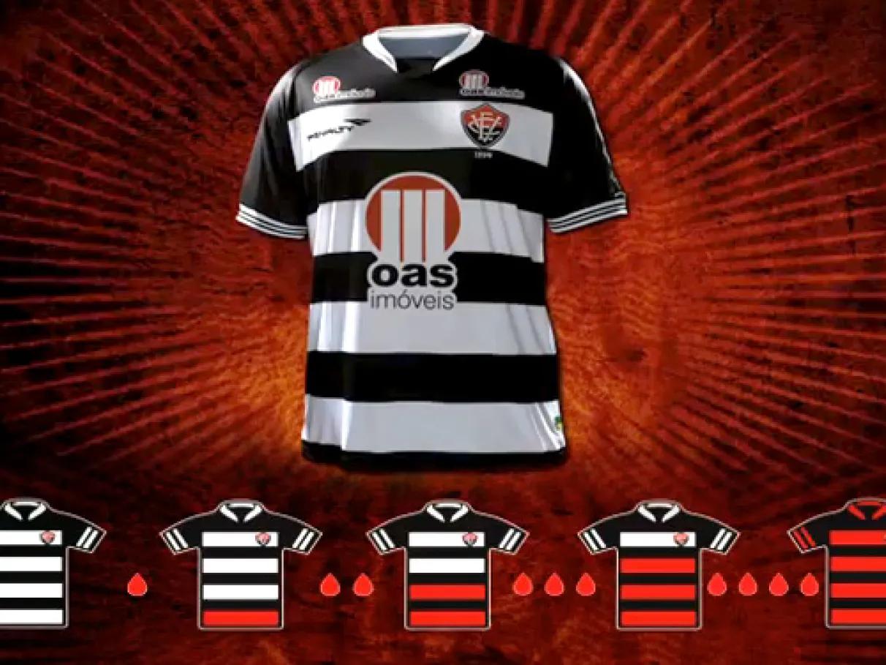
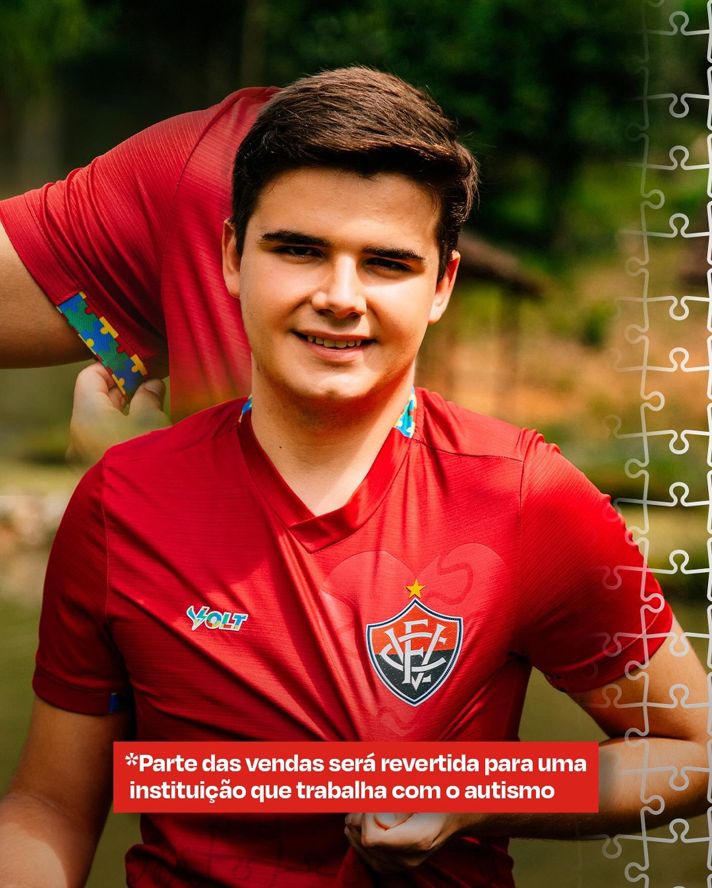
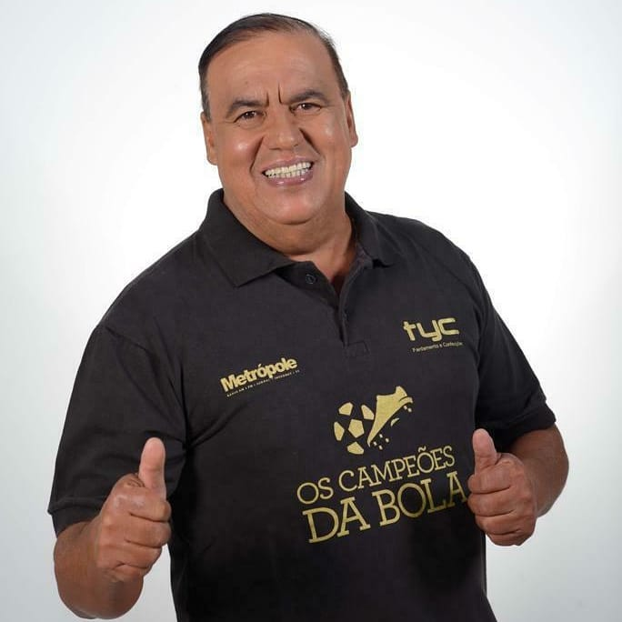
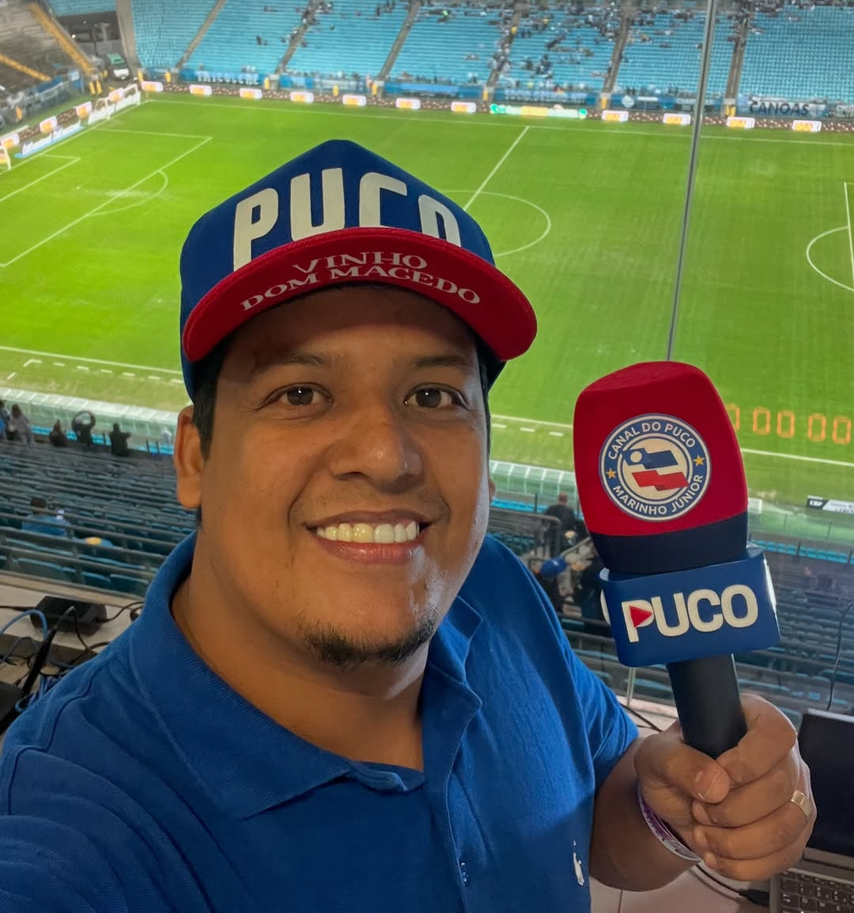
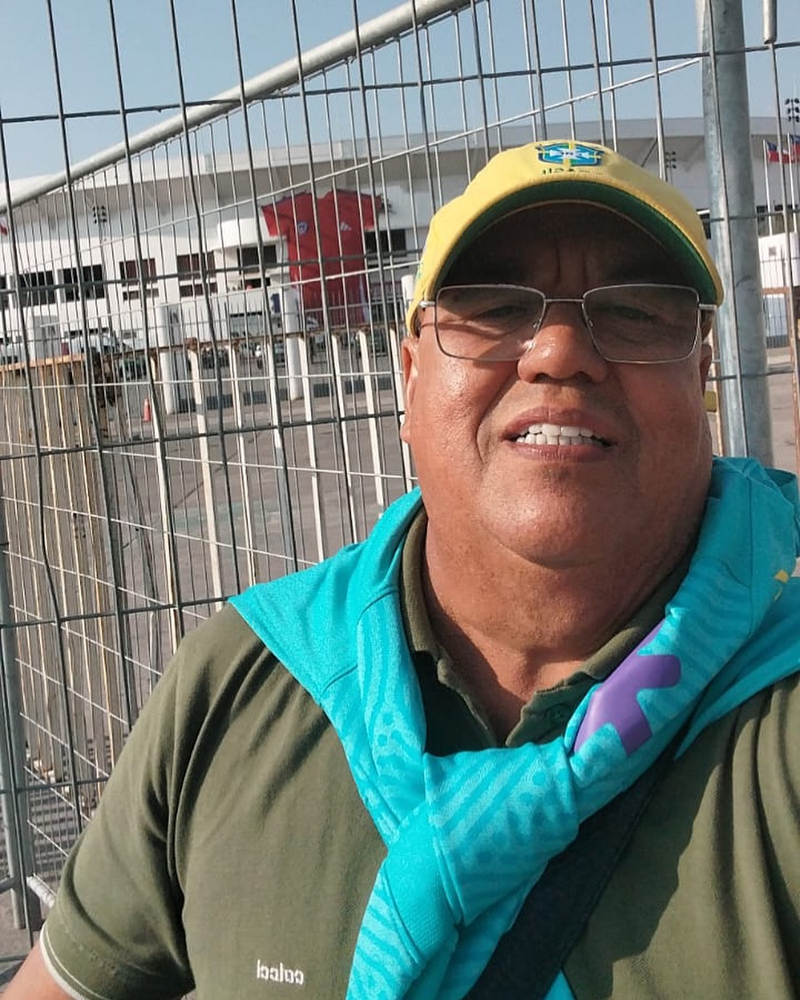
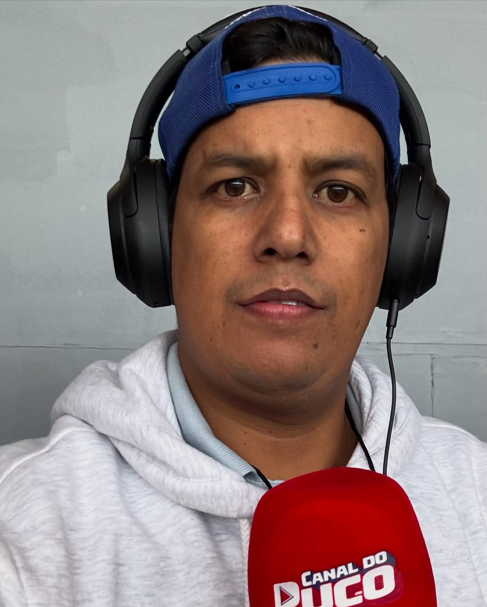
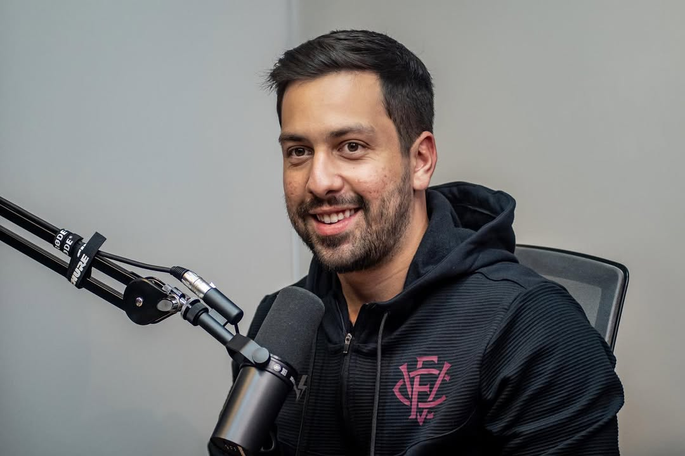
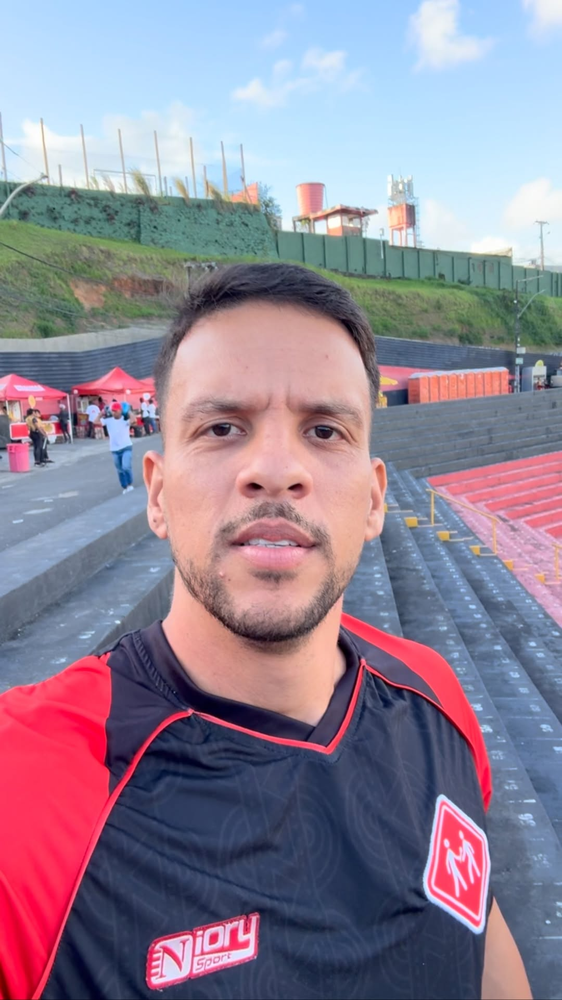

Auge do rádio esportivo
Rádio como principal fonte de cobertura esportiva regional — programas locais e transmissões ao vivo de jogos.
É domingo em Salvador. O sol nasceu e as ruas já ganham cor, de azul, vermelho e branco, de vermelho e preto.
Em Canabrava, um torcedor do Vitória acordou antes mesmo do despertador. Abre o armário e escolhe a camisa com cuidado, a mesma de tantas histórias, de vitórias e tropeços. Pega a bandeira, confere se o celular está carregado e segue rumo ao estacionamento do Barradão. Hoje é dia de jogo!
Do outro lado da cidade, em Brotas, uma torcedora do Bahia se arruma com o mesmo ritual. Combina o look com a namorada, ajusta o lenço azul no cabelo e grava o primeiro story do dia: “Hoje tem Esquadrão na Fonte!”
Cada um com sua cor, sua história, sua fé no resultado. Eles não se encontram nas arquibancadas, mas se cruzam nas redes, nas transmissões ao vivo, nos comentários que viralizam. Ali, entre câmeras e celulares, o futebol se reinventa e vira conteúdo, vira conversa, vira comunidade.
A paixão das arquibancadas agora se multiplica nas telas
O amor pelo clube agora também é um post, um vídeo, uma análise no podcast, um corte no Reels. Essa é a nova arquibancada! Um espaço onde o torcedor fala, cria, comenta e influencia.
Onde o grito que antes parava no alambrado atravessou timelines e transmissões. E onde Bahia e Vitória, dois gigantes de histórias e paixões opostas, aprendem a dialogar com uma torcida que já não só assiste, mas participa, questiona, cria e move o jogo fora das quatro linhas.
É nesse cenário que nasce esta reportagem, uma produção Snowfall criada por três estudantes de jornalismo, que percorrem os bastidores da comunicação esportiva na Bahia para entender como a paixão das torcidas se transforma em estratégia, conteúdo e conexão digital.
Marinho Júnior
Nesse novo cenário, surgem figuras que reconfiguram completamente a maneira como se fala de futebol: os criadores de conteúdo. São torcedores que cruzaram a linha invisível das arquibancadas para se tornarem comunicadores; e comunicadores que, de forma orgânica, assumem o papel de mediadores entre o clube e a torcida. Eles ocupam um espaço híbrido — independente, mas profundamente emocional — dentro de um ecossistema digital que cresce no mesmo ritmo da paixão e da identidade que o futebol desperta.
Entre o grito e o tweet, entre o vídeo de análise e o desabafo pós-jogo, nasce uma nova camada de narrativa. Mas o que significa, afinal, ocupar esse espaço de fala independente em meio à engrenagem profissional da comunicação esportiva?
Quem responde é Marinho Júnior, criador de conteúdo do Bahia, que reflete sobre o papel das mídias alternativas e sobre como elas dialogam — ou tensionam — a relação com a comunicação oficial do clube.
Marinho Júnior
No futebol baiano, a forma como a informação circula já não cabe mais em um único formato. O que antes chegava pelo rádio, pela TV ou pelos jornais impressos agora se espalha pelas redes sociais, pelos podcasts, pelas transmissões ao vivo e até pelos grupos de WhatsApp.
O jornalismo esportivo tradicional e o conteúdo digital aprenderam a dividir, e muitas vezes a compartilhar, o mesmo campo. O resultado dessa transformação é uma comunicação mais ágil, multifacetada e integrada, onde cada formato se retroalimenta do outro.
Essa mudança não aconteceu do dia para a noite. Como explica o jornalista e executivo Erich Beting, fundador do site Máquina do Esporte, o mercado esportivo brasileiro vem passando por um processo constante de amadurecimento:
“Há pelo menos duas décadas a gente mergulha nesse dia a dia de marca esportiva. O mercado hoje é muito melhor do que era há 5, 10 ou 20 anos.”
Erich Beting
Fundador do site Máquina do Esporte
A reflexão de Beting ajuda a entender como clubes, marcas e profissionais de comunicação vêm se adaptando para transformar a paixão em estratégia, e o torcedor em protagonista de uma nova economia do esporte.
Uma entrevista na TV pode se transformar em um corte no Instagram; um comentário no rádio vira pauta em um canal de influenciador; e uma notícia publicada em um portal logo ganha nova vida em um podcast de torcida. Mais do que competir por espaço, essas mídias hoje se complementam, cada uma com sua própria força, linguagem e alcance.
Erich Beting
No estado da Bahia, esse processo ganha contornos muito particulares. O Bahia, ao longo da última década, foi pioneiro ao entender a comunicação não como ferramenta de marketing, mas como expressão de propósito institucional. Entre 2013 e 2021, sob a liderança de Lenin Franco, o departamento de marketing do clube se transformou em um laboratório de inovação social e narrativa. Lenin, que vinha da mídia independente, trouxe uma visão que aproximava o clube do seu povo, um movimento que ele mesmo descreve como uma reconstrução simbólica:
“O Bahia não teve uma mudança de chave simples, de ‘vamos fazer diferente’. Foi uma construção. Desde 2013, nosso pensamento era reaproximar e empoderar o torcedor do próprio clube, porque o Bahia é um time popular. E essa mentalidade foi crescendo até se transformar em campanhas com propósito social, como o Novembro Negro.”
Lenin Franco
Publicitário e executivo de marketing esportivo
Essa estrutura permitia que o Bahia unisse agilidade e profundidade. Algumas campanhas eram planejadas com antecedência, como o próprio Novembro Negro, outras surgiam de forma espontânea, como a ação em resposta às queimadas na Amazônia, desenvolvida e publicada no mesmo dia.
Essa capacidade de reagir com sensibilidade e relevância transformou o Bahia em referência nacional de comunicação estratégica, ao alinhar discurso institucional e impacto social.
Lenin Franco
Enquanto o Bahia consolidava sua narrativa de representatividade, o Vitória também iniciava um processo de reposicionamento simbólico. Durante a gestão de Rafael Curvello, entre 2021 e 2023, o clube reformulou sua identidade digital, modernizou sua linguagem e buscou reconectar o torcedor com o sentimento de pertencimento rubro-negro. Curvello sintetiza o propósito dessa nova fase:
“A missão era fazer o torcedor se sentir parte do Vitória — mostrar que ele não é apenas um espectador, mas um pedaço vivo dessa história.”
Rafael Curvello
Publicitário e executivo de marketing esportivo
TV Vitória no youtube
Os resultados não demoraram a aparecer. O canal oficial do clube no YouTube ultrapassou a marca de 50 mil inscritos nesse período, reflexo de um conteúdo mais dinâmico, autêntico e conectado à torcida. Com acesso direto aos bastidores e liberdade criativa, a TV Vitória se consolidou como um verdadeiro canal de pertencimento. Não se tratava apenas de informar, mas de emocionar, representar e valorizar o torcedor rubro-negro.
Rafael Curvello
Esses dois caminhos, o Bahia da democratização e o Vitória do pertencimento, ilustram um movimento mais amplo: o da profissionalização da comunicação esportiva baiana, que se alimenta da interação constante entre o que é institucional e o que é espontâneo, entre o que vem de dentro dos clubes e o que nasce das vozes que orbitam ao redor deles.
Apesar dos avanços, o caminho da profissionalização na comunicação esportiva brasileira ainda é tortuoso. Muitos clubes, mesmo mergulhados em estruturas cada vez mais complexas, ainda hesitam em se reconhecer como marcas de grande porte, com responsabilidades que ultrapassam o gramado. A visão empresarial do futebol vem crescendo, mas ainda tropeça em velhos hábitos — aqueles impulsos passionais que fazem dirigentes e administradores agirem mais como torcedores exaltados do que como gestores de imagem.
Erich Beting, especialista no tema, observa que alguns clubes já compreenderam a importância de uma postura corporativa e constroem sua comunicação com estratégia e propósito, enquanto outros ainda se perdem em provocações rasas e reações emocionais. Lá fora, exemplos como Manchester United e Barcelona tratam o rival com a distância profissional de quem entende que defender seu torcedor não exige tripudiar do outro. No Brasil, essa maturidade ainda é um aprendizado em andamento, uma lição que se desenrola a cada tweet impulsivo e a cada campanha que ultrapassa o limite do bom senso.
A fala de Beting revela um ponto essencial: a digitalização aproximou clubes e torcedores como nunca antes, mas essa proximidade também cobra responsabilidade. A fronteira entre o entretenimento e a gestão de marca tornou-se cada vez mais fina, e navegar por ela exige sensibilidade, método e, acima de tudo, consciência de que o futebol, hoje, é também narrativa, reputação e valor simbólico. O desafio dos próximos anos será equilibrar paixão e profissionalismo sem deixar que um destrua o outro.
Essa nova filosofia de comunicação transformou a forma como o clube se apresentava. A TV Vitória passou a produzir conteúdos inéditos: treinos, viagens, pré-jogos, entrevistas exclusivas e transmissões das categorias de base, tudo com a linguagem e identidade rubro-negra, aproximando o torcedor da rotina do clube.

“Antes, o Vitória era muito fechado. Nós queríamos quebrar esse padrão — abrir o clube, mostrar o dia a dia, as histórias que acontecem longe das câmeras da imprensa”
Rafael Curvello
TV Vitória
Os resultados não demoraram a aparecer. O canal oficial do clube no YouTube ultrapassou a marca de 50 mil inscritos nesse período, reflexo de um conteúdo mais dinâmico, autêntico e conectado à torcida.
Com acesso direto aos bastidores e liberdade criativa, a TV Vitória se consolidou como um verdadeiro canal de pertencimento. Não se tratava apenas de informar, mas de emocionar, representar e valorizar o torcedor rubro-negro.
Rafael Curvello
Apesar dos avanços, o caminho da profissionalização na comunicação esportiva brasileira ainda é tortuoso. Muitos clubes, mesmo mergulhados em estruturas cada vez mais complexas, ainda hesitam em se reconhecer como marcas de grande porte, com responsabilidades que ultrapassam o gramado. A visão empresarial do futebol vem crescendo, mas ainda tropeça em velhos hábitos — aqueles impulsos passionais que fazem dirigentes e administradores agirem mais como torcedores exaltados do que como gestores de imagem.
Erich Beting, especialista no tema, observa que alguns clubes já compreenderam a importância de uma postura corporativa e constroem sua comunicação com estratégia e propósito, enquanto outros ainda se perdem em provocações rasas e reações emocionais. Lá fora, exemplos como Manchester United e Barcelona tratam o rival com a distância profissional de quem entende que defender seu torcedor não exige tripudiar do outro. No Brasil, essa maturidade ainda é um aprendizado em andamento, uma lição que se desenrola a cada tweet impulsivo e a cada campanha que ultrapassa o limite do bom senso.
A fala de Beting revela um ponto essencial: a digitalização aproximou clubes e torcedores como nunca antes, mas essa proximidade também cobra responsabilidade. A fronteira entre o entretenimento e a gestão de marca tornou-se cada vez mais fina, e navegar por ela exige sensibilidade, método e, acima de tudo, consciência de que o futebol, hoje, é também narrativa, reputação e valor simbólico. O desafio dos próximos anos será equilibrar paixão e profissionalismo sem deixar que um destrua o outro.

O time de futebol Vitória, da Bahia, lançou a campanha "Meu sangue é rubro-negro", removendo temporariamente o vermelho do uniforme para incentivar a doação de sangue ao Hemocentro da Bahia (Hemoba).

O Esporte Clube Vitória lançou a campanha "Dor escondida não cura" para o Setembro Amarelo, usando mensagens ocultas nos uniformes e diversas ações no estádio para incentivar pessoas com sofrimento mental a não esconderem seus sentimentos e procurarem ajuda especializada.

Em apoio ao Dia Mundial de Conscientização sobre o Autismo, uma nova camisa especial feita pela @somosvolt foi lançada para promover respeito e inclusão, com parte do valor das vendas sendo destinada a organizações sociais que trabalham com a causa.

O Esporte Clube Bahia SAF, a PUMA e a Warner Bros. Discovery Global Consumer Products lançaram um uniforme especial e limitado inspirado no Superman, marcando a primeira vez que um time brasileiro tem uma camisa oficial de Super-Herói, coincidindo com a estreia do novo filme do personagem.

Em uma ação de incentivo à adoção, os jogadores do Bahia entraram em campo vestidos de Superman e acompanhados por cães da Associação Brasileira Protetora dos Animais (ABPA), divulgando um PIX para doações à instituição.

Em protesto contra o desastre ambiental nas praias nordestinas, o Bahia jogará contra o Ceará com uma camisa "manchada de óleo" para questionar a responsabilidade e a impunidade pelo vazamento.
Jornalismo e estratégias digitais integradas
No futebol moderno, a comunicação deixou de ser monopólio de um único veículo. Rádio, TV, jornal impresso, redes sociais e canais independentes coexistem em um ecossistema complexo, cada um com seu papel e público. O desafio para clubes e profissionais é equilibrar tradição e inovação, integrando canais estabelecidos com novas vozes digitais, sem perder a autenticidade e a conexão com o torcedor.
Quem viveu essa transformação de perto foi Édson Marinho, radialista da Rádio Metrópole. Com décadas de cobertura esportiva na Bahia, ele acredita que o rádio não apenas sobreviveu, mas se reinventou. Marinho defende que, ao contrário do que se previu com a chegada da TV, o rádio nunca morrerá e que todos os meios — rádio, podcast, internet, redes sociais, jornal e televisão — podem coexistir, pois há espaço para todos.

Enquanto as redes sociais fragmentaram a atenção, o rádio preservou um vínculo emocional raro com o torcedor, seja no trajeto até o estádio ou na própria arquibancada.No entanto, a integração dessa nova realidade não é simples. Marinho Júnior, filho de Édson e criador do Canal do Puco, representa a nova geração que transformou a comunicação esportiva em um diálogo direto, com linguagem popular e ritmo de rede social. Ele reconhece que essa transição enfrenta resistência. Segundo Marinho Júnior, existe um certo preconceito da mídia tradicional contra a mídia independente. Ele aponta que profissionais formados, que batalharam por seu espaço, ainda têm dificuldade em aceitar que qualquer pessoa possa criar um canal e frequentar os mesmos espaços, como coletivas de imprensa.

O que distingue o trabalho das mídias independentes, segundo Marinho Júnior, é a liberdade para falar com o torcedor de igual para igual. Embora a estrutura de sua cobertura seja semelhante à dos canais oficiais, com narradores e comentaristas, o torcedor percebe a diferença do formato independente. Essa independência permite uma liberdade para criticar — algo que as TVs dos clubes, por serem mais "blindadas", não fariam, como apontar que um jogador perdeu um gol claro ou que está em má fase.
Ele reforça, porém, que a independência não significa irresponsabilidade. Marinho Júnior lembra que a internet não é "terra de ninguém" e que é preciso ter cuidado, pois muitos respondem judicialmente pelo que publicam. Trata-se de fazer um trabalho com liberdade, mas com consciência.
Rádio como principal fonte de cobertura esportiva regional — programas locais e transmissões ao vivo de jogos.
Fortalecimento de afiliadas locais e programas esportivos regionais (TV Bahia, Band Bahia, Aratu/SBT, etc.).
Surgimento de canais independentes de torcedores e conteúdos alternativos — maior participação digital na pauta esportiva.
Lives, podcasts e cobertura independentes se consolidam; mídias alternativas ganham legitimidade e público.
Lenin Franco, que também veio da mídia alternativa antes de dirigir o marketing do Bahia, explica que o conflito entre o novo e o tradicional foi inevitável e, ao mesmo tempo, necessário:
“Cada um de nós virou uma emissora. Todo mundo produz o que quer, a hora que quer. Essa foi uma mudança natural para a gente, mas difícil para as mídias tradicionais entenderem. Muitos jornalistas da velha guarda não conseguiram se adaptar.”
Erich Beting
Fundador do site Máquina do Esporte
Ele ressalta ainda o poder da atenção ativa na comunicação digital:
“Quando o torcedor escolhe um canal no YouTube, ele decide assistir, pausa, volta, continua. Esse nível de atenção é muito maior. É uma mídia que o torcedor quer consumir. Por isso o impacto é tão forte.”
Erich Beting
Fundador do site Máquina do Esporte
A observação de Lenin sintetiza o que se tornou o grande diferencial da mídia independente: ela não fala para o torcedor, mas com ele.
Lenin Franco
Trazendo o ponto de vista institucional, Rafael Curvello, ex-gerente de marketing do Vitória, enxerga nesse diálogo um potencial de fortalecimento mútuo. Ele explica que a imprensa tradicional tem um papel fundamental de registro e alcance, enquanto os canais independentes falam direto com o torcedor. Para Curvello, o segredo não está em escolher um ou outro, mas em entender como essas forças podem trabalhar juntas.
O clube, portanto, precisou reconhecer os criadores de conteúdo como parceiros na amplificação da marca, e não como rivais. Assim, o clube se posiciona como mediador, conciliando a tradição do rádio com a linguagem dos influenciadores.
Rafael Curvello
Entre essas novas vozes está Anderson Mattos, criador do Canal do Dinâmico, que cobre o Vitória. Ele vê o papel das mídias alternativas como complementar. Mattos avalia que seu trabalho ajuda o clube naturalmente, pois alcança "bolhas" de audiência que os canais oficiais, como a TV Vitória, por vezes não alcançam.
Anderson Mattos também enxerga na comunicação independente uma forma de manter a paixão viva, especialmente nos momentos difíceis. Ele destaca que o maior patrimônio de um time é o torcedor e que os canais independentes não dependem 100% do desempenho do time, pois se baseiam nessa paixão. Durante o período mais delicado da história recente do Vitória, entre 2019 e 2021, com a queda para a Série C, Mattos manteve o elo com a torcida, continuando a produzir conteúdo mesmo sem vitórias, o que demonstrou a força dessa conexão.
O relato de Anderson resume o papel das mídias independentes: elas não concorrem com a comunicação oficial, elas a complementam. Ao atingir públicos diferentes, esses criadores expandem o alcance das narrativas do clube, gerando engajamento genuíno. O torcedor que acompanha o Canal do Dinâmico pode não assistir à TV Vitória, mas é impactado positivamente pelo clube.
Essa sobreposição de vozes cria uma comunicação em rede. Enquanto o rádio mantém o calor do tempo real, as mídias digitais ampliam o alcance. Os clubes deixam de ser meros emissores e passam a atuar como mediadores, equilibrando tradição e inovação. O desafio é garantir que essa integração preserve o vínculo autêntico com o torcedor.
As trajetórias de Édson Marinho, Marinho Júnior, Rafael Curvello e Anderson Mattos se cruzam como capítulos da reinvenção da comunicação esportiva na Bahia. Essas quatro vozes não se anulam; elas se completam. Juntas, contam a história de uma nova ecologia midiática, na qual as fronteiras entre imprensa, entretenimento e ativação de marca se dissolvem. O futebol baiano vive um momento de convergência, onde o torcedor, mais do que nunca, assume o centro dessa narrativa, participando ativamente do jogo fora das quatro linhas.

Édson Marinho representa o rádio que sobrevive ao tempo, sustentado pela emoção e credibilidade.

Marinho Júnior personifica a voz independente que fala ao torcedor sem filtros, com ritmo digital.

Rafael Curvello traz o olhar institucional, focado em transformar o clube em marca e comunidade.

Anderson Mattos simboliza o torcedor-comunicador, que movido pela paixão, transforma o amor pelo clube em conteúdo.
Marketing esportivo: paixão que gera resultados
Antes de mergulhar nos números e estratégias, é importante compreender o contexto dessa transformação.
O marketing esportivo deixou de ser apenas uma vitrine de comunicação e passou a ocupar um papel central na geração de receitas, no fortalecimento da marca e na construção de comunidades de torcedores.
Segundo o jornalista e especialista em marketing esportivo Erich Beting, essa mudança reflete uma nova mentalidade dentro dos clubes — uma percepção mais estratégica sobre o valor do engajamento e da narrativa. Ele observa também a singularidade do mercado brasileiro nas redes sociais, especialmente quando comparado ao cenário europeu:
“O que mais muda hoje é a preocupação em fazer com que o marketing gere receita e, ao mesmo tempo, conquiste o torcedor como consumidor. A internet teve um papel essencial nisso, porque os clubes começaram a entender que podem ser a mídia — controlar sua narrativa e se comunicar diretamente com o fã.”
“O Brasil não está atrás. Talvez aqui vire meio que a vanguarda desse relacionamento... naturalmente a gente usa muito a rede social.”
Erich Beting
Fundador do site Máquina do Esporte
O que Beting quer dizer é que, embora os clubes europeus operem sob processos mais controlados e padronizados, o Brasil desenvolveu uma efervescência singular no uso das redes sociais. Aqui, a comunicação pulsa de forma imediata, criativa e profundamente engajadora — um reflexo direto da maneira como o brasileiro vive o futebol. Essa espontaneidade, que mistura emoção e estratégia, já começa a chamar atenção fora do país. Grandes ligas e clubes europeus, como Chelsea e La Liga, têm adaptado suas estratégias para dialogar com o público brasileiro, reconhecendo nele um dos maiores potenciais de engajamento digital do mundo.
Na prática, isso significa que Bahia e Vitória podem, sim, aprender com os modelos internacionais, mas também têm espaço para ousar. Campanhas irreverentes, memes, influenciadores e conteúdos exclusivos tornaram-se ferramentas poderosas — capazes de gerar resultados de engajamento mais diretos e orgânicos do que em mercados excessivamente controlados. O Brasil, nesse sentido, funciona como um laboratório vivo de marketing esportivo digital, onde a criatividade é o principal ativo e a paixão é o combustível que move tudo.
Os números confirmam essa virada. Nos últimos anos, Bahia e Vitória ampliaram suas receitas por meio de ações de marketing, parcerias comerciais e estratégias digitais que fortaleceram suas marcas e consolidaram o torcedor no centro das decisões. Mais do que simplesmente divulgar, o desafio agora é gerar valor — transformar cada ação de comunicação em um gesto de aproximação, pertencimento e fidelização.